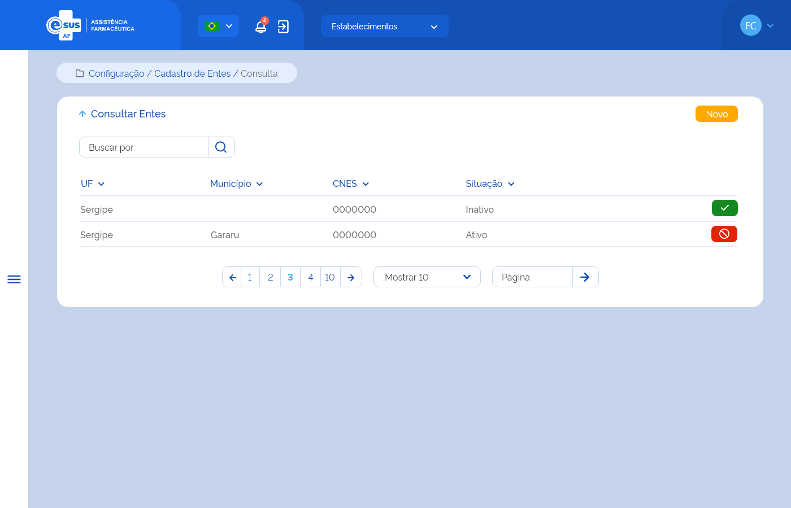

Especificação Técnica 013 - Consultar Entes
Descrição
Como usuário quero consultar os entes que pertencem à minha instância.
Protótipo 001

Elementos de Tela:
- Bread Crumb – “Configuração / Cadastro de Entes / Consulta”
- Título da página – “Consultar Entes”
- “Seta” – M - retorna para a Tela Inicial/Dashboard
- “Novo” – BT - direciona para a Tela de Cadastrar Ente
- Buscar por – A / AC
- Lista de entes
- UF – A (2)
- Município – A (50)
- CNES – N (7)
- Situação – A (20)
- “Ativar” – BT
- “Desativar” – BT
- Ordenação nas colunas
- Paginação
- Registro por página
- Ir para página
Legenda
TIPO: A = Alfanumérico, N = Numérico, D = Data, M = Imagem, BT = Botão, LK = Link, SU = Seleção Única, SM = Seleção Múltipla, AC = Autocomplete, * = Obrigatório.
Critérios de aceite
- O usuário somente poderá acessar a funcionalidade caso tenha permissão; RGN001
- O acesso à funcionalidade é dado através do menu lateral no item “Configuração” quando acionar o subitem “Cadastro de Entes”;
- Quando o usuário acionar a opção de “Voltar”, o sistema deve retornar à tela inicial do sistema (dashboard);
- Quando o usuário acionar a opção de “Novo”, o sistema deve direcionar à tela “Cadastrar Ente”; ETE014
- O sistema deve recuperar o(s) ente(s) cadastrado(s) e que pertence(m) à instância do usuário e apresentar a lista com os dados: UF, Município, CNES, Situação e as ações desejáveis para cada registro. Caso algum campo retornar vazio, o sistema deve apresentar a descrição “-”;
- O sistema deve apresentar as ações conforme:
- Para registro com situação “Ativo”, a opção “Inativar”;
- Para registro com situação “Inativo”, a opção “Ativar”;
- Quando o usuário acionar a opção “Ativar”, o sistema deve apresentar mensagem de confirmação ao usuário. Caso o usuário confirme a ação, o sistema deve ativar a participação do ente e apresentar a mensagem de sucesso. Caso a ação não seja confirmada, o sistema permanece na tela de consulta; MSG066 MSG068
- Quando o usuário acionar a opção “Inativar”, o sistema deve apresentar mensagem de confirmação ao usuário. Caso o usuário confirme a ação, o sistema deve inativar a participação do ente e apresentar a mensagem de sucesso. Caso a ação não seja confirmada, o sistema permanece na tela de consulta; MSG067 MSG069
- O sistema deve gravar a data, hora e CPF e nome do usuário que a executou qualquer ação de alteração no registro. RGN005